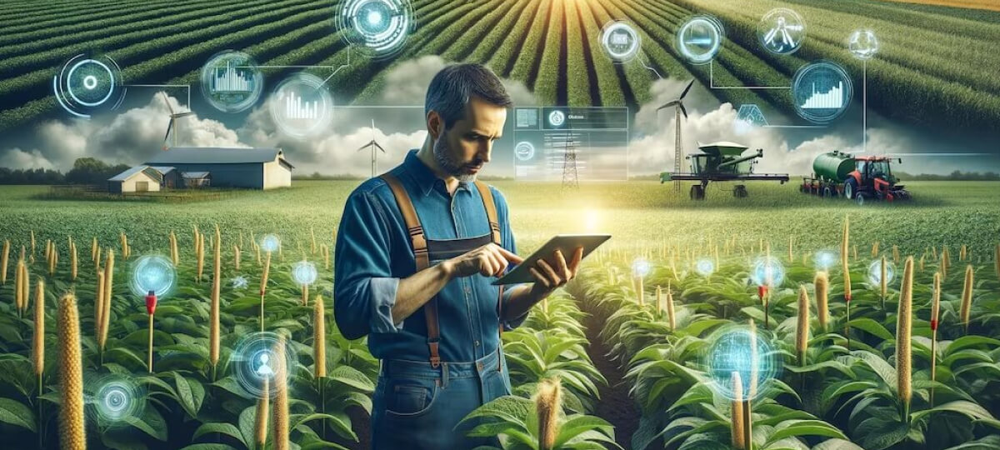

pontos positivos e negativos


automaçao de tarefas
A envolve o uso de tecnologias como sensores, softwares, drones e robótica para otimizar e automatizar processos produtivos.

Poluição
A agricultura contribui significativamente para a poluição do ar, solo e água, através do uso de insumos químicos, desmatamento, erosão do solo e práticas de manejo inadequado.

CUSTO ALTO
alto custo na agricultura pode ser explicado pela necessidade de investimentos em diversas áreas, como insumos, mão de obra, maquinário e tecnologia. Esses custos podem variar dependendo do tipo de agricultura praticada e da região. O gerenciamento eficiente dos custos é crucial para a sustentabilidade da produção agrícola.

FALTA DE MÃO DE OBRA QUALIFICADA
A agricultura tecnificada exige profissionais com conhecimentos técnicos para operar máquinas e sistemas, além de capacidade de análise de dados.